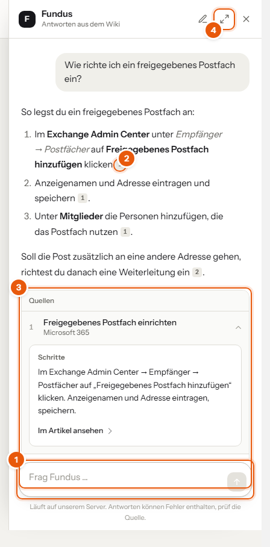
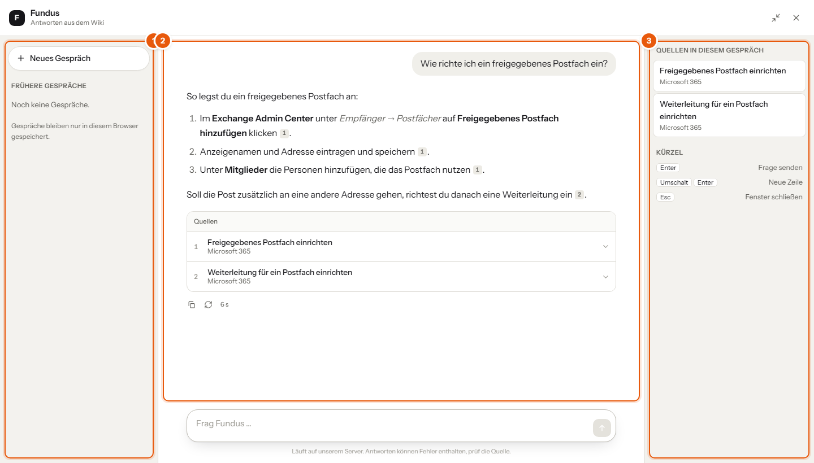
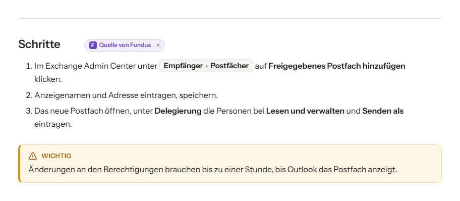

Fundus ist nicht nur der Name des Wikis, sondern auch seiner KI. Du stellst eine Frage in eigenen Worten, Fundus sucht passende Stellen in den Artikeln, die du lesen darfst, und antwortet mit Quellenangabe.

Während Fundus sucht und schreibt, siehst du, wie lange die Antwort schon dauert. Mit dem roten Knopf brichst du ab.


Öffnest du eine Quelle, springt das Wiki zu dem Abschnitt, aus dem Fundus gelesen hat. Er leuchtet kurz auf, hinter der Überschrift steht Quelle von Fundus. Lies dort nach, bevor du eine Antwort umsetzt.
Gibt es etwas Neues für dich, steht am runden Fundus-Knopf eine violette Zahl, daneben eine kurze Nachricht wie 2 neue Hinweise. Ein Klick auf die Nachricht zeigt die Einträge:
Ein Klick auf einen Eintrag öffnet den Artikel. Alles gesehen blendet die Nachricht aus, bis wieder etwas Neues kommt. Später (oder das × an der Nachricht) blendet sie nur bis zur nächsten Anmeldung aus.
Gesehen heißt nicht erledigt: Offene Hinweise und fällige Prüfungen stehen weiter auf der Startseite unter Offene Hinweise und Zu prüfen, bis du sie abhakst.
| Kann | Kann nicht |
|---|---|
| Antworten aus Artikeln, die du lesen darfst | Wissen außerhalb des Wikis, zum Beispiel aus dem Internet |
| Schritte zusammenfassen und Befehle zeigen | Passwörter oder Zugangsdaten nennen, die gehören in den Passwort-Manager |
| sagen, wenn nichts dazu im Wiki steht | garantiert fehlerfrei antworten |
Fundus kann sich irren. Prüf wichtige Angaben immer in der Quelle, vor allem, bevor du etwas an Systemen änderst.
Fundus läuft auf unserem eigenen Server. Deine Fragen und die Artikel verlassen das Firmennetz nicht.